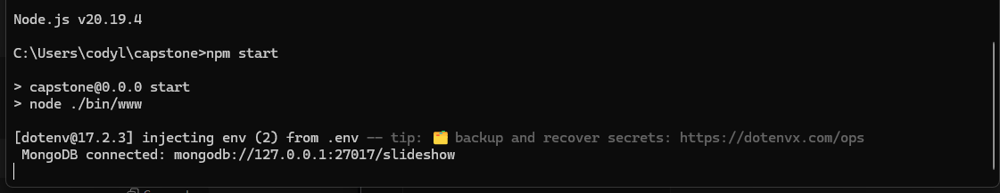
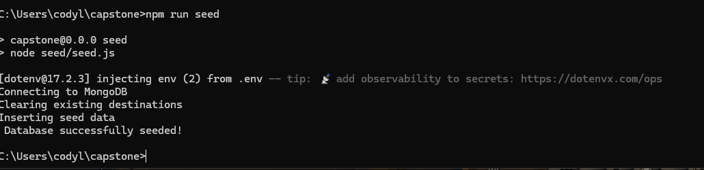
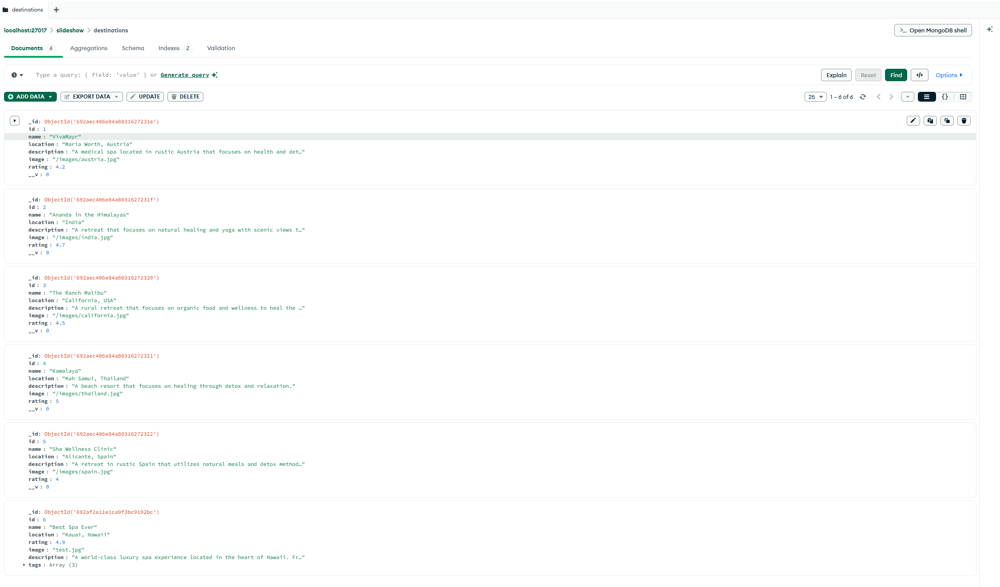
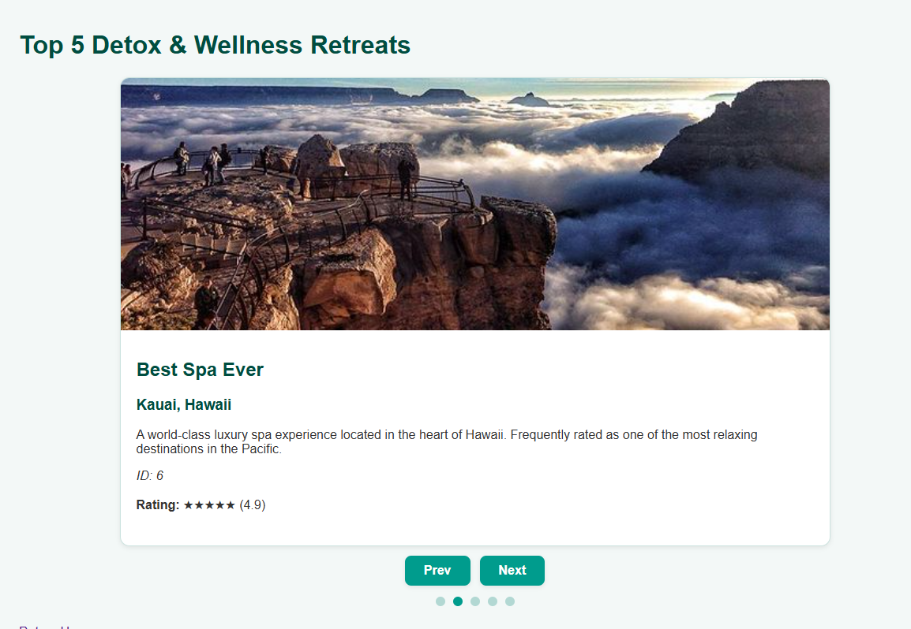

CS-499 Capstone ePortfolio – Cody Leveille
Enhancement 3 converted the JSON file into MongoDB and utilizes MongoDB Compass to handle data manipulation, within MongoDB compass a user can Create, Read, Update and Delete entries within the database. The data is saved between sessions and has been integrated with the other infrastructure from previous enhancements. With the completion of this enhancement the Capstone-499 project is complete and is a complete functional webstack application.
Briefly describe the artifact. What is it? When was it created?
The artifact I chose for this enhancement was a slideshow originally created in COS 250. It is a slideshow that uses a simple Java program to display a top 5 destination slideshow. It uses JFrame to accomplish this which is considered legacy within Java itself. It has a lot of limitations to it being simple because everything is hard coded into the program, this was one of my earliest programming assignments and it does not include any databases. The enhanced version implements this within a Node.js and Express web application.
Justify the inclusion of the artifact in your ePortfolio. Why did you select this item? What specific components of the artifact showcase your skills and abilities in software development? How was the artifact improved?
The artifact selected has a lot of potential for development growth. It being a simple JFrame slideshow with hardcoded values means it is functional but not easily expanded on. This application has none of the requirements for enhancement 3, there are no databases within the entire application. With the integration of MongoDB into the project it will make this project more modular and enhance the complexity demonstrating my skills with databases.
This enhancement efficiently showcases my skills with databases, but more importantly, it highlights several core development competencies. The transition from a static hardcoded system to a structured Model-View-Controller web application demonstrates a wealth of knowledge regarding architectural design principles. With the implementation of controllers, services, routes and a database, I demonstrate my ability to develop a fully integrated system that aligns with the requirements for CS-499.
In this enhancement I specifically integrated MongoDB into the web application .
This demonstrates that Node read from the MongoDB and started successfully.
Figure 2: database seeded successfully, demonstrating functional data insertion and backend communication.
After executing seed.js, the database is populated with the slideshow destination data, allowing the information to be viewed and modified through MongoDB Compass based on the defined Mongoose schema. New content can be added manually by following the JSON structure:
{
"id": 6,
"name": "Best Spa Ever",
"location": "Kauai, Hawaii",
"rating": 4.9,
"image": "test.jpg",
"description": "A world-class luxury spa experience...",
"tags": ["spa", "relaxation", "luxury"]
}This will add data to the database and update the slideshow accordingly depending on the information that is entered. It being a top 5 destinations slideshow it will display the 5 highest rated locations within the current database.
Figure 3: Destination entries stored in MongoDB Compass after seeding, showing successful database integration and structured document storage.
Figure 4:Updated slideshow view, rendered dynamically using controllers and Handlebars templates driven by MongoDB data.
Did you meet the course outcomes you planned to meet with this enhancement? Do you have any updates to your outcome-coverage plans?
This enhancement has successfully met the requirements of the intended outcomes laid out in Module One. There are no plans to update the outcome coverage plan at this time.
Outcome 4 - Demonstrate an ability to use innovative techniques, skills, and tools to implement computer solutions.
This enhancement demonstrates outcome 4 by replacing the hardcoded static Java slideshow with a modern modular Node.js application powered by MongoDB. I implemented the Mongoose schemas, express routing and seeding demonstrating the ability of current development tools to produce a flexible modular modern solution.
Outcome 5 - Although the user authentication was not implemented this enhancement demonstrates outcome 5 through secure handling of database credentials, use of environment based configuration and schema enforced data validation. These practices reduce risk of attack and malformed data insertion within the database and overall reflect a proactive approach to secure system architecture.
Reflect on the process of enhancing and modifying the artifact. What did you learn as you were creating it and improving it? What challenges did you face?
Through enhancing this project a person had to rethink how the original data was handled and its overall scalability. The original slideshow was static and hardcoded making expansion tedious and cumbersome. With the integration of MongoDB I learned more about how data is processed within the stack. These changes overall make the project more modern and more scalable for future use.
One of the first challenges I ran into was configuring and seeding MongoDB. Initially the script failed to run properly returning errors instead of inserting the proper data into the database Troubleshooting the issue required me to examine the schema and verify the connection to the database and adjusting the execution method for the seed.js. This experience made me more familiar with this database overall and improved my debugging skills.
Another issue I ran into was the slideshow returning all slides within the database while the original was a “top 5 destination” slideshow. To resolve this I modified the logic to return a sliced subset of the database collection rather than the entire thing, this adjustment improved the data handling and allowed the application to properly display 5 slides as originally intended. Through this I learned the importance of bug testing and debugging code to work properly. A simple error in logic can throw off the entire interface for a user.
Overall this enhancement has strengthened my skills and problem solving regarding backend development and full stack architecture. I walk a path with a stronger understanding of Node.js, MongoDB integration and how to properly seed a database. With this experience it has reinforced my understanding of backend development and how to work with real world development tools. Through this process I gained experience that will directly benefit my future projects and professional work. This enhancement marks a meaningful step forward in my journey as a programmer.